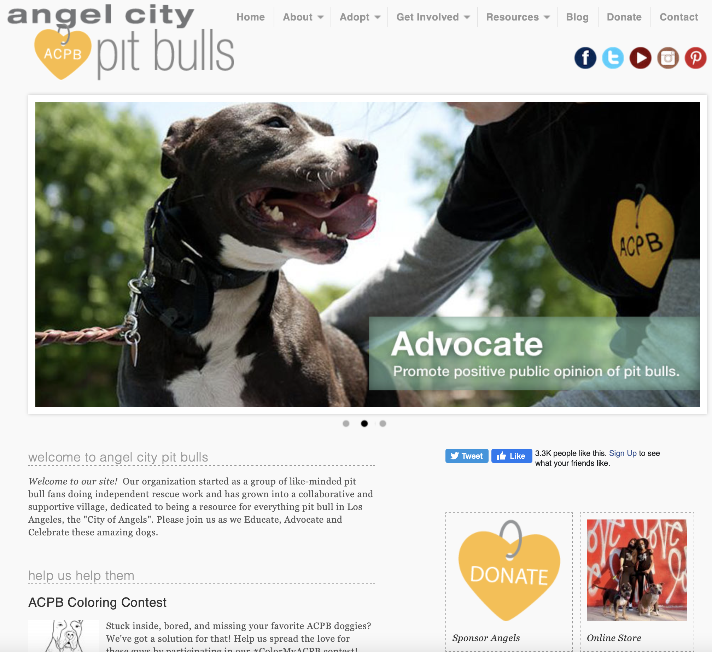
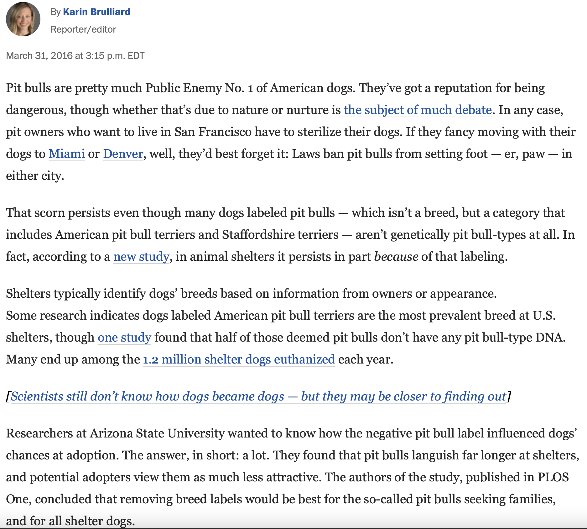
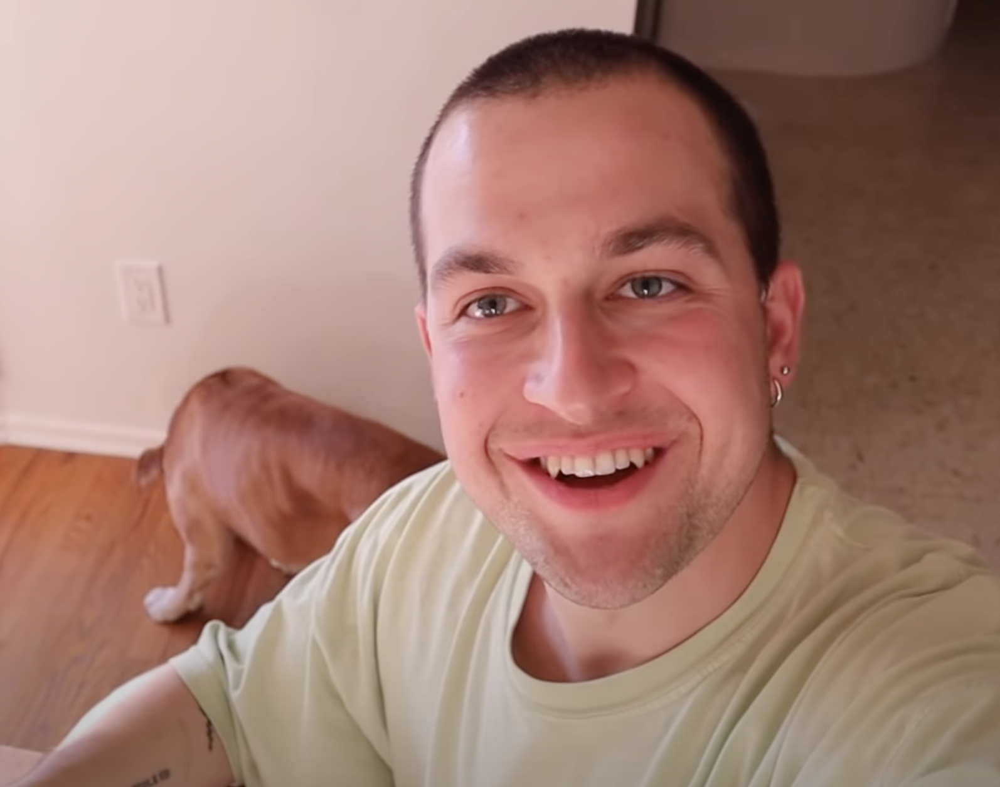
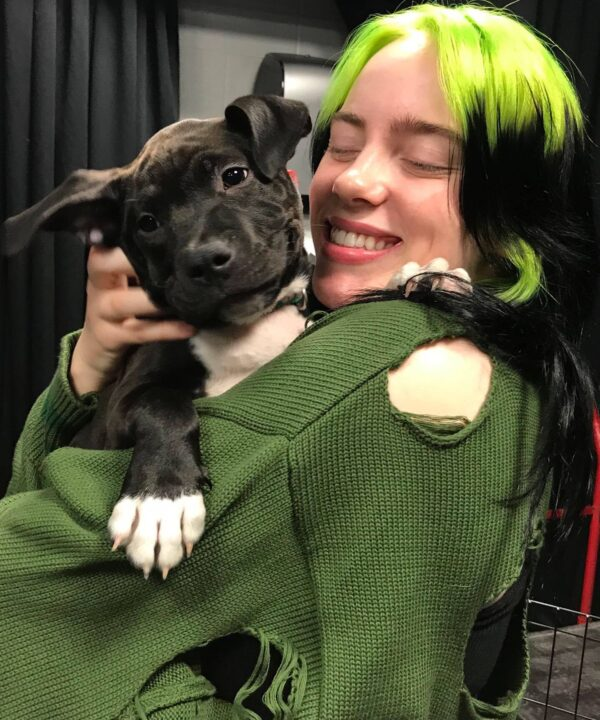

Primary Research
Client Research was conducted through their website, social media and other platforms that the organization itself is displayed on.

- Angel city pits is a LA based organization that started as a group of pit bull lovers wanted to let people know how they really are as a breed.
- They have multiple options on how to support. Fostering, donation and social media awareness. There are also volunteer options for locals.
- They mainly get information out via newsletter with an email sign up.
- They provide resources to those who want more information on topics like spay/neuter, rehoming your pet, and finding a stay.
- Their website also has a blog section that hasn’t been updated in a while, could also use an update.
Secondary Research Information
Secondary Research
The Washington Post Article - "Being labeled a pit bull can doom a shelter dog's chances of adoption"

1. Dog's labeled "pit bull" spend more than three times longer in a shelter than similar-looking dogs not deemed pit bulls
Experiment of 30 dogs labeled "pit bull" and "pit bull look-a-like" by the Arizona Animal Welfare League
2. People view pit bull-type dogs as less attractive then other breeds
- In a poll amongst 179 participants, they voted pit bulls to be the more aggresive-looking and difficult to train. They were put up against labrador retrievers and border collies.
3. The compant a pit bull keeps influences how it's perceived
- In the same pole, participants deemed pit bulls to seem more firendly when shown next to elderly people or children in pictures and more agressive in other photos.
4. Pit bull-types at shelters are more likely to be adopted if they're given no breed label - and so are all dogs
- Orlando shelters did away with breed labels and saw an increase of 12 percent in adoption rates when the "pit bull" breed label was dropped from listings.
Social Media Influences
Angel City Pit Bulls has been blessed with multiple social media influencers reaching out and adopting pits of their own, spreading awareness and showcasing to their audience just how loving the breed can be.

Chris Kelemens
- Los Angeles YouTuber and Social Media Influencer Chris Klemens adopted his pitbull "Booger" from Angel City Pit Bulls in Febuary of 2021.
- Since the finalization of the adoption Klemens has published numerous videos with Booger giving ACPB screen time and spotlighting the organization by putting a donation link in the description and talking about them during part of the video to inform his viewers of them.
- Since the initial upload of Chris' video on Booger he has released several videos featuring the new addition to his family in updates and even challenges and trying trends with her.

Billie Eilish